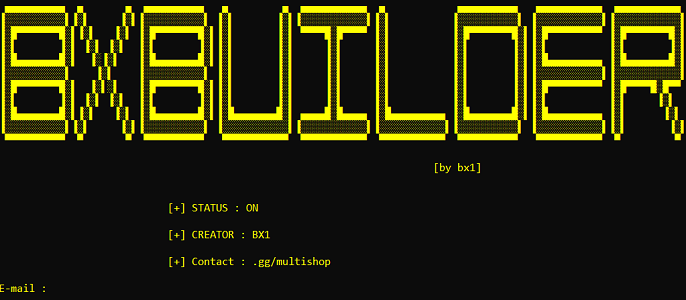
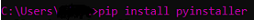
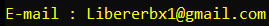
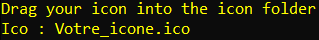
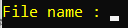
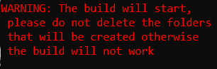
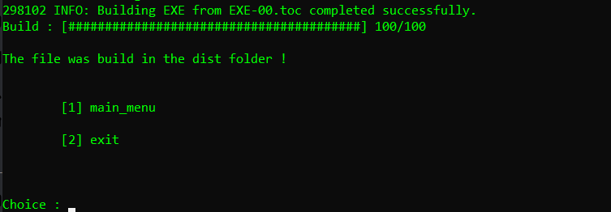

Accueil
Tools_Menu
Build Keylogger

[+] étape 1 :
Sur le cmd copier coller "pip install pyinstaller".

[+] étape 2 :
Inserer votre adresse mail pour que le
keylogger puisse vous envoyer les fichiers.

[+] étape 3 :
Inserer votre icone dans le dossier
icone qui c'est crée automatiquement.

[+] étape 4 :
Inserer le nom du fichier sans extension,

[+] étape 5 :
Ceci est un message d'avertissement
pour vous prevenir qu'il ne faut touché a aucun
fichier du dossier sinon sa peut corrompre le build

[+] étape 6 :
Pour verifier que le build soit bien effectuer
Le message sera pareil que dans l'image si dessous.
Le Keylogger a etais build dans le dossier dist
Vous pouvez l'utilisez a présent !
